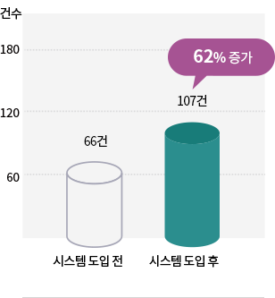
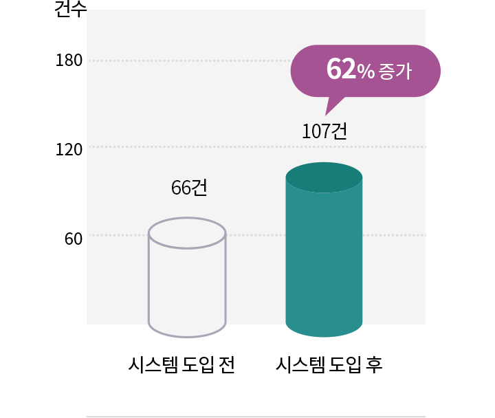
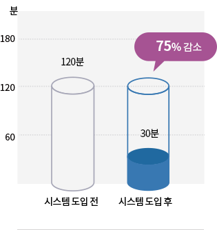
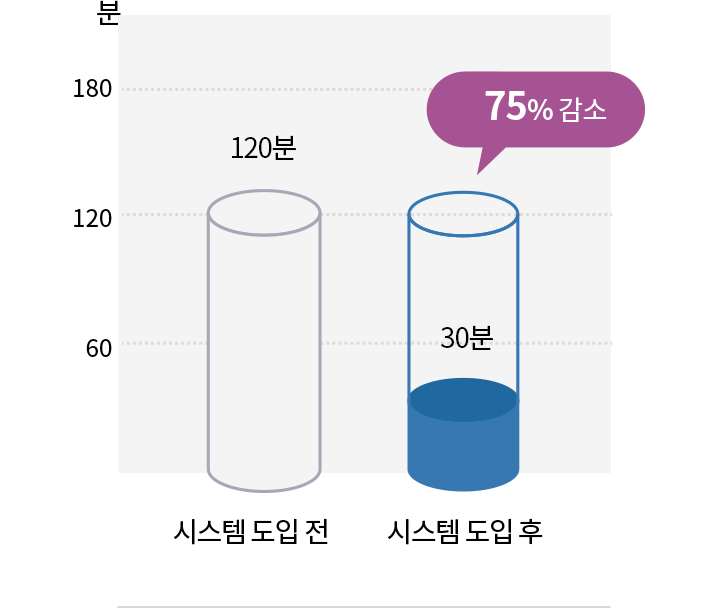
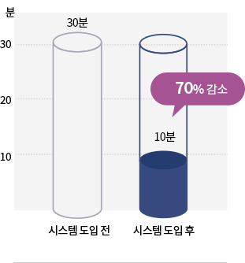
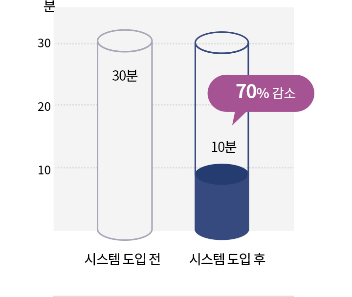

(주)아이티코어스
대표이사 : 김성하/박철홍
사업자등록 : 296-81-01690
이메일 : It-cous@it-cous.com
TEL : 031-790-1533
FAX : 031-790-1534
경기도 하남시 조정대로 150 아이테코 9층 910호
Copyright© 2021 (주)아이티코어스 All rights reserved
시스템 유지보수
적용분야
-
지능형 교통 시스템(ITS)ITS 서버 상태 감시
제공정보 신뢰도 감시
현장시설물 상태 감시 -
버스정보 시스템(BIS)BIS 서버 상태 감시
주행 위반 감시
제공 정보 오류 감시 -
신호제어 시스템신호 서버 상태 감시
신호제어기 상태 감시
실시간 진단
실시간으로 동작하며 빠른 장애에 대한 진단을 실시
-
장애 유형별
발생여부 체크장애 유형 정보를 바탕으로
수집 된 정보들을 비교하여
장애 발생여부를 확인 -
장애 원인 추적장애 유형과 일치하는
장애 상태가 발견되면,
근본 원인 요소를 파악
-
장애 확정 및 알림발생한 장애 유형과 근본 원인에
대한 정보를 사용자에게 알려주고
장애 해결 가이드 제공 -
장애 대응 및 해제장애 대응 조치 후,
정상적인 데이터가 감지되면
장애 상태 해제 및 이력 등록
-
장애 대응 및 해제장애 대응 조치 후,
정상적인 데이터가 감지되면
장애 상태 해제 및 이력 등록 -
장애 확정 및 알림발생한 장애 유형과 근본 원인에
대한 정보를 사용자에게 알려주고
장애 해결 가이드 제공
심층 진단
일 단위로 실행되며 통계 데이터, 일간 이력 분석, 장애 예측의 진단을 수행
-
추가적인 데이터 수집통계 데이터, 일일 이력
데이터 등 진단에 필요한
추가 데이터를 수집 -
장애 유형별
발생여부 체크장애 유형 정보를 바탕으로
수집 된 정보들을 비교
-
장애 예측 정보 체크통계 데이터의 추세,
패턴 정보 등을 활용하여
장애 발생 가능성을 확인 -
이후 단계는
실시간 진단과 동일
-
이후 단계는
실시간 진단과 동일 -
장애 예측 정보 체크통계 데이터의 추세,
패턴 정보 등을 활용하여
장애 발생 가능성을 확인
기대효과
신속한 장애 검지 및 원인 파악, 장애해결 가이드를 통해 장애복구시간 감소(기존 시스템 대비 75%감소)
-
장애감지건수지속적인 장애요소 진단을 통하여
장애감지건수 증가 -
장애원인분석시간자동화된 장애원인 추적을 통하여
원인분석시간 대폭 감소 -
문제해결시간장애해결가이드 제공을 통한
장애문제 해결